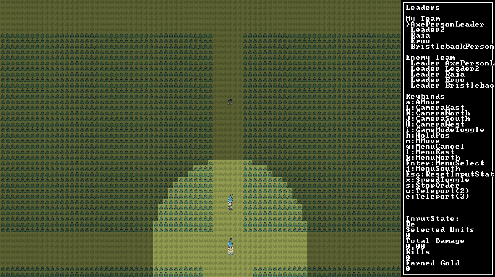
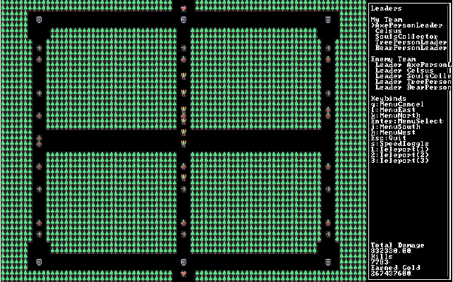
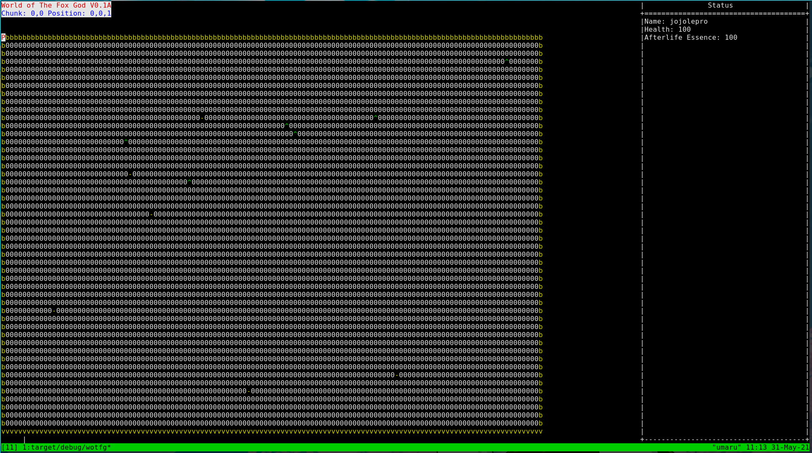
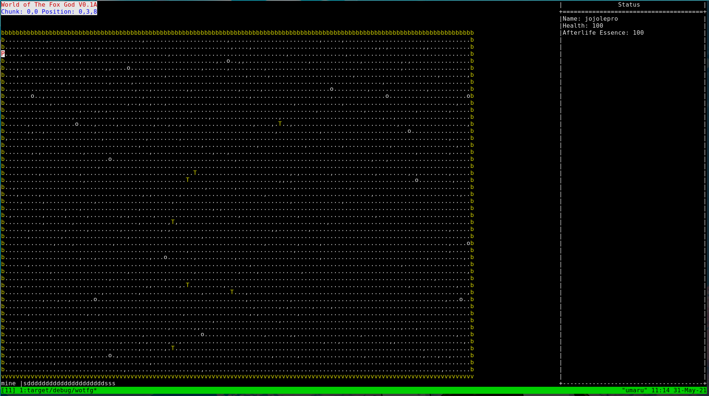
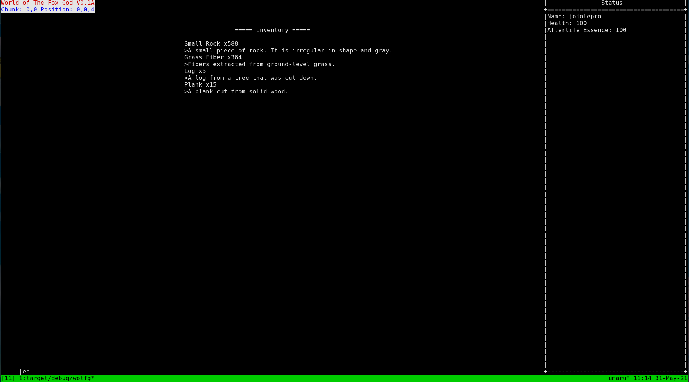
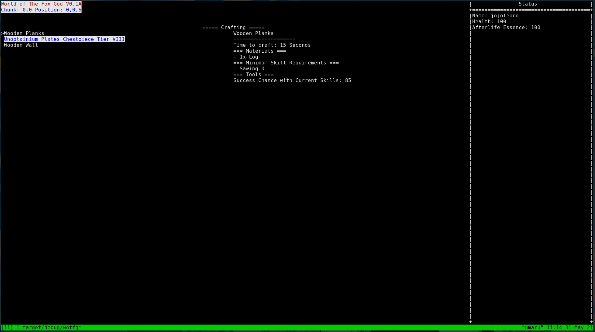
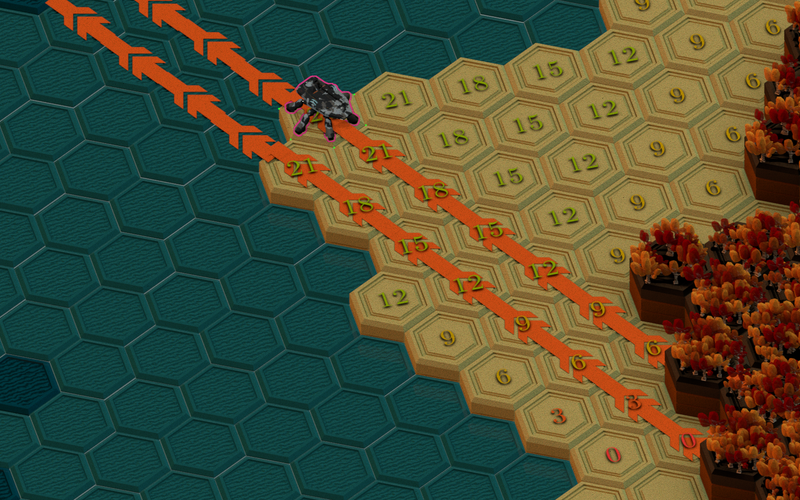

Minigene, Shotcaller, WOTFG, Amethyst and the Future of Rust Gamedev
Hello and welcome to your ~~daily~~ ~~monthly~~ yearly status update!
This post is rather long, so feel free to skip sections underlined with dashes,
as they are more in-depth explanations of what was mentioned just before them.
Let's task about what has been happening in the past few months and what is
coming in the future!
Minigene
Minigene is a new game engine. It is meant to fill the empty space between
indie game development and professional game development.
https://github.com/jojolepro/minigene
By that, I mean that it sits between the "we do everything for you and hold your
hand" approach and the "build everything yourself" approach.
Minigene is built from a wide collection of small (and not so small) crates.
To understand how it works, we can think of the engine using layers.
For instance, here are the layers used for the game Shotcaller:
- 4: Game
- 3: Minigene
- 2: Glue
- 1: Features
Layers Explained
Let's start at the bottom, with layer 1: the features. This layer is composed of
many small and specialized crates. For instance, one crate for i18n, one crate
for game inventory and item management, etc...
https://github.com/jojolepro/game_features
This layer also includes crates which aren't "game features" but are
"engine features".
For instance, the crate game_engine_core gives us a structure in which we can
run our game logic using global states.
https://github.com/jojolepro/game_engine_core
Crates in layer 1 are small and usually aim to have all of their functions
verified using unit tests. They also aim to have clear documentation.
Finally, they aim to limit the number of different ways you can do the same
thing. This is so it is easier to learn how to use them and it also limits
complexity.
Now, let's talk about layer 2: the glue!
The glue is the part of the engine that takes data from some global storage and
updates/calls the layer 1 features.
In the case of minigene, we use planck_ecs, the easiest entity-component-system
to use and also the most tested and minimalist.
At layer 2, we "wrap" the layer one features inside of the glue.
One layer 2 crate can use one or more layer one crate, although we usually try
to limit ourselves to one.
For instance, we can have a planck_game_features crate that creates Systems
which execute game_features update functions using Components coming from
Planck's World structure.
Now, layer 3 is simply minigene, the crate. It re-exports a bunch of layer 2
crates into a convenient package. To avoid importing a billion crates when using
minigene, we place the different features into groups and hide them behind
feature gates.
You can enable those features using:
minigene = { git = "https://github.com/jojolepro/minigene",
features = ["feature1", "feature2", "..."] }
Finally, layer 4 is the game you want to make.
Usually, it will import minigene and use some of its features.
It will also import some crates that are specific to the needs of the game.
Here's how it will look in practice:
https://www.figma.com/file/cv7orWvUWfB6teK7RLqu3L/The-New-Amethyst?node-id=0%3A
Quite the mess, I know, but it is the cleanest graph of a full game
engine that I have ever seen. I'll let you imagine how horrible it is for
engines which are not aiming to have small dependencies!
Let's continue:
You are free to replace any feature of minigene with your own or an equivalent
crate. Minigene is written in such a way that, if you want, you can even use it
alongside another game engine! For more details on this, read the section on
Shotcaller.
Finally, the engine makes heavy use of event chaining. I discussed of this
extensively here:
https://jojolepro.com/blog/2020-08-20_event_chaining/
In short, it allows to drive the execution of systems using events and to
create events from past events. Here is a quick example:
<bracket-lib event>::char(x) -> InputEvent::KeyPress(x) -> GameEvent::Jump
-> NetworkedAction::PlayerJump(auth_id) -> NetworkEvent::PlayerJumped(entity_id)
Here, we started with a key press, inserted it in a more convenient structure,
created an event specific to the game we are creating, pushed a network event
to the server and finally notified all clients in the game that we jumped.
Features Of Minigene
Currently, Minigene has quite a few features but is far from having all of the
planned features.
Here are some features that are currently implemented and working:
- ASCII rendering in the terminal
- 2D Tile-Based graphics in a desktop window
- Input handling
- Game inventory management
- Game stats management (health, mana, damage dealt this game, etc...)
- Game engine core (sleeping, executing game frames, managing states)
- Game clock & stopwatch
- Planck ECS integration
- Bracket-lib integration
- Runs on WASM (Web Assembly)
Planned Features and Changes
The engine has a lot of planned features, but for now we will mention only
a few of them.
- Add a command/debug console (clap to events, custom logger output)
- Add network backend nakama-rs
- Add network backend message-io
- Integrate planck_ecs_bundle
- Create bundle with game_features related systems (planck_game_features crate)
- Move code (when applicable) from minigene systems to game_features
- Integrate a 2D renderer to emulate terminal rendering
- Integrate a 2D renderer to render sprites in any position, shape or rotation.
- Choose a math crate that will be used as the base on which we build other
crates.
- Mobile device support (high priority!)
Shotcaller
Shotcaller is a MOBA game inspired by DOTA 2 and League of Legends.
https://github.com/amethyst/shotcaller
It is built on minigene and was the reason the engine was created in the first
place.
Interestingly, we actually run Minigene inside of the bracket-lib engine.
Bracket-lib drives the execution, either through its own event loop or
through web assembly, and then calls Minigene's Engine::engine_frame function.
The game can be tested using:
git clone https://github.com/amethyst/shotcaller
cd shotcaller
git checkout ac07a7bfb4224e8af4bd43e6df3afcaa879d4a48
In the case this doesn't work, there is also an online version:
https://shotcaller.jojolepro.com/
This version is quite a bit older, however.
Desktop Version:

Old WASM Build:

WOTFG
World Of The Fox God is a tile-based MMORPG (multiplayer roguelike/roleplay).
https://github.com/jojolepro/wotfg
It is inspired by games like Cataclysm: Dark Days Ahead (graphics and skills),
Path Of Exile (depth of items and skills) and Minecraft Faction servers
(core gameplay ideas).
It aims to be an anarchist (without hierarchy) game, meaning that there is no
strongly enforced concepts like groups, leaders and chiefs. It is up to players
to communicate, form alliances and figure out how they best want to play
together.
It also aims to be a hardcore game while still being easy to enjoy, meaning that
it is punishing when you do bad actions, but there will be plenty of room to
enjoy the game and learn from your mistakes.
To achieve this, we will make death very punishing: You will lose your
character, experience, skills and items. When you create a new character, you
will appear in a random location in the giant world, with no indication of
where you are until you find a map.
The reason for this is twofold:
- We want to encourage players to cooperate and for this to happen we need to
discourage attacking other players. Since the downside to dying is so high,
attacking players is a risky gamble that not many players would risk taking.
- Players should be more likely to cooperate with others and should avoid
fighting others in most cases.
The game also aims to maximise enjoyment while minimising the time spent
actively playing it. To this effect, we took some inspiration from
Runescape's model: Crafting and farming items takes a long time.
This means that you can start crafting a new chestplate, go cook yourself some
food in real life, and come back to a brand new chestplate.
The time it takes to make something will depend on its rarity and level.
Some items will take 5 seconds to craft, while the best items will take 24
hours. Crafting recipes are pausable, so you could craft one of those
longer recipes over multiple nights while still actively playing during the day.
Kind of related to this, the game aims to be strategic and gives you some time
to think about your actions. Game updates happen every 5 seconds. This means
you can only do one thing each 5 seconds, being it to move, continue crafting,
attacking a player or mining some ore.
This slows the game down quite a bit, removing the stress factor of real-time
games. Since the goal is not to make you press a key every 5 seconds and stay
in front of the game, there is what I call an "Action Queue". It queues your
action that will be executed, one at a time, every 5 seconds.
For example, if you press ddddd, your character will move 5 times right over
the course of 25 seconds.
Again, while this might seem boring, it is not. The game is meant to be played
while doing other things (working, cooking, watching videos), so it actually
feels fast when you do other things at the same time. The great thing about that
is that it can fill this feeling of "not doing progress in life" while still
encouraging you to do the things you need to do but might not fulfill you.
Currently, the game only runs in a terminal using ASCII graphics.
Tile-based 2D graphics are planned. Mobile device support is also planned and
a high priority!
Let's complete this section with some details with the world and some details
about the short-term future of the game.
The world is huge, 125x125 chunks of 128x128x16 tiles. That's 4 billion tiles!
The current plan is to have a single server containing around 10,000 players.
Depending on how much resources that takes and the number of players on the
game, it is possible that more servers will be created or that the world will be
extended.
Right now, the game has around a third of the planned "base" features.
- Inventory management
- Crafting
- World generation
- Mining
- Moving around the map
- Player Action Queue
- Picking up items
- Partial implementation of multiplayer
Here's a preview of some of the planned features for the next couple weeks:
- Add placing tiles in the world
- Complete world chunk saving
- Add description of items at the left of the inventory screen
- Add item dropping
- Add item containers (chests, lockers)
- Show keybinds right side of the screen
- Add timing to crafting (currently, crafting does not take time)
- Add falling and fall damage
- Add mining up (but not down!)
- Limit view to what your character can see
- Event Log at the bottom of the screen
Underground Layer:

Surface Layer:

Inventory:

Crafting:

There are way more things I want to talk about, but I will keep those for
future blog posts.
Amethyst

I recently joined the Board of Director of the Amethyst Game Engine Foundation!
All that means is that is that now I'm in charge of getting the engine back
on track.
There are a couple ways to do that, so let's start with what we can do
RIGHT NOW.
First of all, we are making all issues "actionable". What I mean by this is
that we will ensure that all Github issues have a list of tasks that, once
completed, will lead to the issue being closed.
This is to make it easy for contributors to understand what they have to do.
It also makes it easy to know which issues we have to close: Issues that have
no clear way of getting solved get closed and discussion is encouraged in the
RFC process to come up with a solution there.
Secondly, Amethyst 0.16.0 NEEDS to be released. The only remaining task to get
there is to update the book with new information concerning the legion port and
update the code examples.
Finally, I have made a longer term list of tasks to improve the engine and also
time estimations of the work:
- Make all issues actionable (4h)
- Fix book for legion port (10h)
- Add test_all.sh script and release.sh script (with places to check everything is fine) (4h)
- Publish 0.16 (2h)
- Replace src/ content with game_engine_core (5h)
- Remove hard dependency on git lfs (5h)
- Publish 0.17 (1h)
- Replace stopwatch by rust-stopwatch2 (1h)
- Implement default, serialize, deserialize, debug to more types (2h)
- Explore replacements for amethyst rendering (3h)
- Explore replacements for amethyst ui (3h)
- Look at what code can be moved out of amethyst and into other crates (8h)
- Publish 0.18 (1h)
- Check that we are using nice color crate (1h)
- Implement physics crate with bindings to nphysics_ecs (6h)
- Publish 0.19 (1h)
- Implement mesh editing and querying (ram-side mesh data) (3h)
- Add wgpu renderer (or any renderer with opengl and mobile support) (20+h)
- Publish 0.20 (1h)
As you can see, there is this "look at what code can be moved out of Amethyst"
item.
This is because I want Amethyst to follow the example of Minigene: features
should be moved to layer 1 crates, legion glue to layer 2, and Amethyst should
act as layer 3. This is a ton of work for an engine of this size, so it is fair
to assume that Amethyst codebase will contain both layer 2 and layer 3.
I'm still hoping we can get layer 1 out of amethyst and into reusable crates
that will benefit the whole ecosystem!
Call For Help!
Wew! This was a long blog post! Still here? Good!
We need your help! *I* need your help!
There are a lot of ways you can help, even if you are not familiar with
programming and even if you didn't read the blog post at all!
Donating on Patreon
Donating on patreon helps me spend more time working on open source projects!
Whether it is games or game engines, your monetary donation helps create that!
It is also the easiest and fastest way to help me and the open source game
ecosystem as a whole!
https://patreon.com/jojolepro

Contributing Code/Unit Tests
There are multiple ways to contribute code.
In the case of Amethyst and Minigene, it can be as simple as taking layer 1 code
(features) and layer 2 code (Entity Component System systems) and moving them to
small crates.
In the case of WOTFG and Shotcaller, you can open pull requests with features
that you want. Before doing that, it is always a good idea to contact us
to know what is most needed and if your feature is something that would fit well
with the game concepts.
Finally, for all of those, adding unit tests to ensure that everything is
working like it should is extremely appreciated!
Contributing Documentation
Documentation is also something that is very appreciated.
Whether it is just fixing a typo or contributing pages of documentation,
we are very grateful towards anyone writing documentation, blog posts, tutorials
and books!
Talk about us!
If none of the previous options sounds like a good fit for you, simply talk
about us! Post the link to this blog post to places you know. Every bit helps!
Joining/Contacting us
Here is how you can contact us for those different projects:
Myself:
- By Mail:
jojolepro [at] jojolepro [dot] com
- On Discord:
jojolepro#8057
- Patreon:
https://patreon.com/jojolepro
Minigene and WOTFG Development Team:
- On Discord:
https://discord.gg/gb2wENz
Amethyst and Shotcaller:
- On Discord:
https://discord.gg/amethyst
Follow the blog using RSS!
https://jojolepro.com/blog/blog.xml
As a final note, I'm currently looking for a job. Feel free to contact me if
you have an open position, especially in Rust!